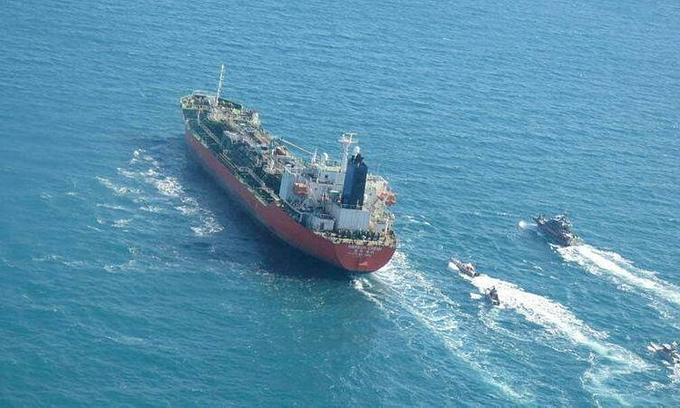

Iran to release all crew but captain of seized South Korean ship
By AFP February 3, 2021 | 12:26 pm GMT+7
Iran said Tuesday it has allowed all crew, including two Vietnamese, except the captain from a South Korean tanker seized last month for alleged pollution to leave the country.
The Islamic Revolutionary Guard Corps seized the Hankuk Chemi and arrested its multinational crew of 20 sailors near the strategic Strait of Hormuz on Jan. 4, saying it had polluted the waters.
The development came as Tehran urged Seoul to release billions of dollars of Iranian assets frozen in South Korea due to U.S. sanctions.
"In a humanitarian move by Iran, the crew of the South Korean tanker accused of polluting the environment of the Persian Gulf were allowed to leave the country," foreign ministry spokesman Saeed Khatibzadeh said in a statement.
Permission had been granted upon "the request of the South Korean government and (with) the cooperation of the judiciary in Iran", he added.
He did not specify whether the crew had already left.
Seoul-based news agency Yonhap cited the South Korean foreign ministry as saying the captain would remain in Iran to look after the tanker. It was not clear when the vessel might be allowed to leave.
The arrested crew were from South Korea, Indonesia, Vietnam, and Myanmar.